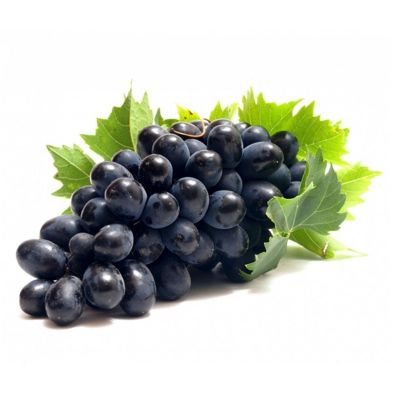
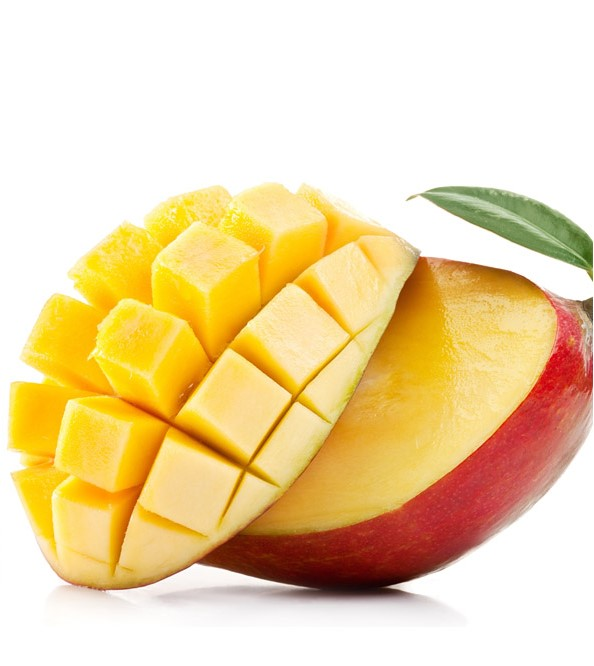
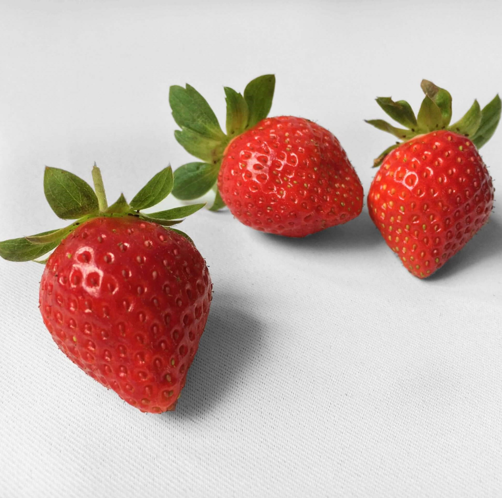

巨峰葡萄

台灣巨峰葡萄是一種源自日本的葡萄品種。 它的果粒大，堅實耐貯藏。 在台灣，巨峰葡萄是主要的種植品種之一，因為它適應台灣的氣候，深受農民和消費者的喜愛。 台灣巨峰葡萄的特點是口感豐富，甜度和香氣俱足，獨特的風味使其成為市場上的龍頭品種。
愛文芒果

愛文芒果的由來最早是由在美國佛羅里達州的F.D. Irwin莊園所培育出來的芒果品種，是用 Lippens mango 與 Haden mango 這兩個品種的樹苗進行開放式的授粉，終於在1945年時首次結果，並在1949年時被命名跟紀錄，臺灣則是在1954年引進來的，並在1962年時正式於臺南市的玉井區等地區廣大推廣。
大湖草莓

民國46年，大湖鄉民賴雲添道親戚家拜訪，看到這個新興的作物很感興趣，次年便與其他農友購買了種苗回大湖栽種，從此開啟了大湖重草莓的歷史，大湖因為盆地地形與日夜溫差大的氣候特性，十分適合草莓的生長，在農民們的努力下，漸漸打開了知名度